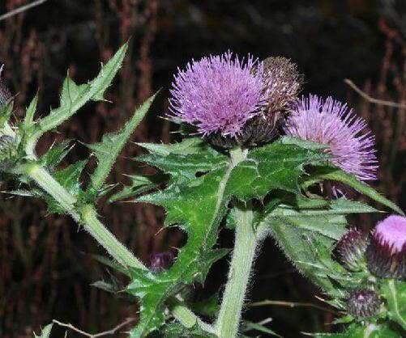
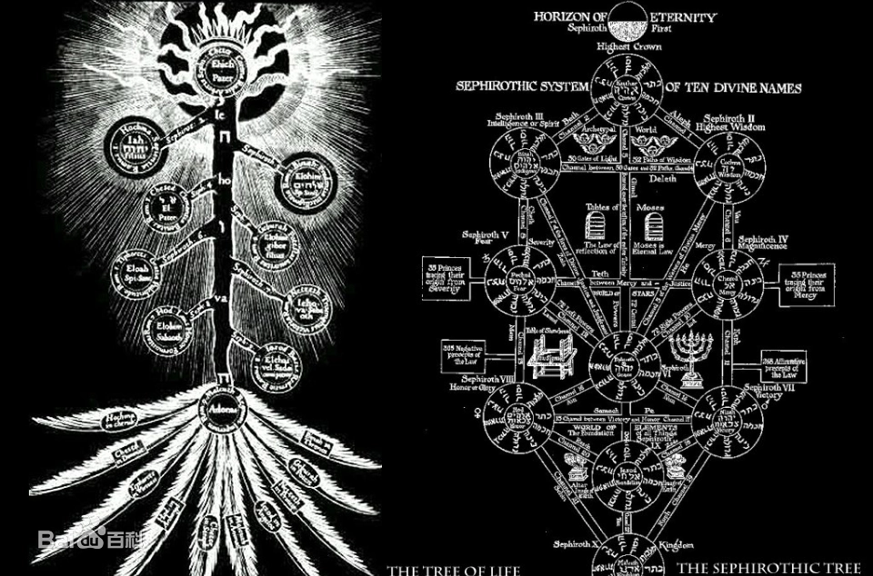
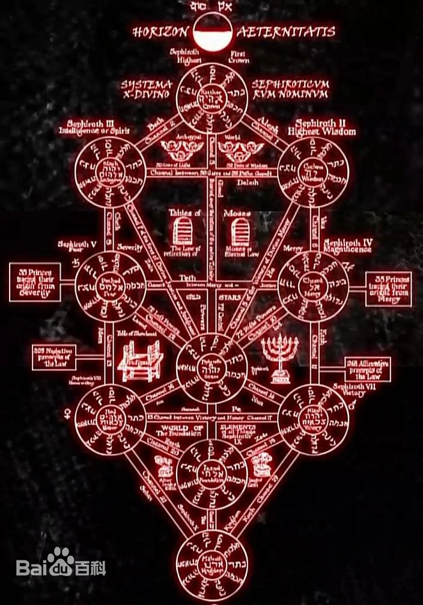

创世纪(Genesis) 03¶
3.1 Now the serpent was more subtil than any beast of the field which the LORD God had made. And he said unto the woman, Yea, hath God said, Ye shall not eat of every tree of the Garden? ( 3-1-v1 )
3.2 And the woman said unto the serpent, We may eat of the fruit of the trees of the garden. ( 3-2-v1 )
3.3 But of the fruit of the tree which is in the midst of the garden, God hath said, Ye shall not eat of it, neither shall ye touch it, lest ye die. ( 3-3-v1 )
3.4 And the serpent said unto the woman, Ye shall not surely die. ( 3-4-v1 )
3.5 For God doth know that in the day Ye eat thereof, then your eyes shall be opened, and ye shall be as gods, knowing good and evil. ( 3-5-v1 )
3.6 And then the woman saw that the tree was good for food, and that it was pleasant to the eyes, and a tree to be desired to make one wise, she took of the fruit thereof, and did eat, and gave also unto her husband with her; and he did eat. ( 3-6-v1 )
3.7 And the eyes of them both were opened, and they knew that they were naked; and they sewed fig leaves together, and made themselves aprons. ( 3-7-v1 )
3.8 And they heard the voice of the LORD God walking in the garden in the cool of the day: and Adam and his wife hid themselves from the presence of the LORD God amongst the trees of the garden. ( 3-8-v1 )
3.9 And the LORD God called unto Adam, and said unto him, Where art thou? ( 3-9-v1 )
3.10 And he said, I heard thy voice in the garden, and I was afraid, because I was naked; and I hid myself. ( 3-10-v1 )
3.11 And he said, Who told thee that thou wast naked? Hast thou eaten of the tree, whereof I commanded thee that thou shouldest not eat? ( 3-11-v1 )
3.12 And the man said, The woman whom thou gavest to be with me, She gave me of the tree, and I did eat. ( 3-12-v1 )
3.13 And the LORD God said unto the woman, What is this that thou hast done? And the woman said, The serpent beguiled me, and I did eat. ( 3-13-v1 )
3.14 And the LORD God said unto the serpent, Because thou hast done this, thou art cursed above all cattle, and above every beast of the field; upon thy belly shalt thou go, and dust shalt thou eat all the days of the life: ( 3-14-v1 )
3.15 And I will put enmity between thee and the woman, and between thy seed and her seed; it shall bruise thy head, and thou shalt bruise his heel. ( 3-15-v1 )
3.16 Unto the woman he said, I will greatly multiply thy sorrow and thy conception; in sorrow thou shalt bring forth children; and thy desire shall be to thy husband, and he shall rule over thee. ( 3-16-v1 )
3.17 And unto Adam he said, Because thou hast hearkened unto the voice of thy wife, and hast eaten of the tree, of which I commanded thee, saying, Thou shalt not eat of it: cursed is the ground for thy sake; in sorrow shalt thou eat of it all the days of thy life; ( 3-17-v1 )
3.18 Thorns also and thistles shall it bring forth to the tree; and thou shalt eat the herb of the field. ( 3-18-v1 )
3.19 In the sweat of the face shalt thou eat bread, till thou return unto the ground; for out of it wast thou taken: for dust thou art, and unto dust shalt thou return. ( 3-19-v1 )
3.20 And Adam called his wife Eve; because she was the mother of all living. ( 3-20-v1 )
3.21 Unto Adam also and to his wife did the LORD God make coats of skins, and clothed them. ( 3-21-v1 )
3.22 And the LORD God said, Behold, the man is become as one of us, to know good and evil: and now, lest he put forth his hand, and take also of the tree of life, and eat, and live for ever: ( 3-22-v1 )
3.23 Thereof the LORD God sent him forth from the garden of Eden, to till the ground from whence he was taken. ( 3-23-v1 )
3.24 So he drove out the man; and he placed at the east of the garden of Eden Cherubims, and a flaming sword which turned every way, to keep the way of the tree of life. ( 3-24-v1 )
3.1 Now the serpent was more crafty than any of the wild animals the LORD God had made. He said to the woman, “Did God really say, ‘You must not eat from any tree in the garden’ ?” ( 3-1-v2 )
3.2 The woman said to the serpent, “We may eat fruit from the tree in the garden, ( 3-2-v2 )
3.3 but God did say, ‘You must not eat fruit from the tree that is in the middle of the garden, and you must not touch it, or you will die.’” ( 3-3-v2 )
3.4 “You will not certainly die,” the serpent said to the woman. ( 3-4-v2 )
3.5 “For God knows that when you eat from it your eyes will be opened, and you will be like God, knowing good and evil.” ( 3-5-v2 )
3.6 When the woman saw that the fruit of the tree was good for food and pleasing to the eye, and also desirable for gaining wisdom, she took some and ate it. She also gave some to her husband, who was with her, and he ate it. ( 3-6-v2 )
3.7 Then the eyes of both of them were opened, and they realized they were naked; so they sewed fig leaves together and made coverings for themselves. ( 3-7-v2 )
3.8 Then the man and his wife heard the sound of the LORD God as he was walking in the garden in the cool of the day, and they hid from the LORD God among the trees of the garden. ( 3-8-v2 )
3.9 But the LORD God called to the man, “Where are you?” ( 3-9-v2 )
3.10 He answered, “I heard you in the garden, and I was afraid because I was naked; so I hid.” ( 3-10-v2 )
3.11 And he said, “Who told you that you were naked? Have you eaten from the tree that I commanded you not to eat from? ( 3-11-v2 )
3.12 The man said, “The woman you put here with me —-she gave me some fruit from the tree, and I ate it.” ( 3-12-v2 )
3.13 Then the LORD God said to the woman, “What is this you have done?” The woman said, “The serpent deceived me, and I ate.” ( 3-13-v2 )
3.14 So the LORD God said to the serpent, “Because you have done this, Cursed are you above all livestock and all wild animals! You will crawl on your belly and you will eat dust all the days of your life.” ( 3-14-v2 )
3.15 And I will put enmity between you and the woman, and between your offspring and hers; he will crush your head, and you will strike his heel. ( 3-15-v2 )
3.16 To the woman he said,”I will make your pains in childbearing very severe; with painful labor you will give birth to children. Your desire will be for your husband, and he will rule over you.” ( 3-16-v2 )
3.17 To Adam he said, “Because you listened to your wife and ate fruit from the tree about which I commanded you, ‘You must not eat from it’, Cursed is the ground because of you; through painful toil you will eat food from it all the days of your life.” ( 3-17-v2 )
3.18 It will produce thorns and thistles for you, and you will eat the plants of the field. ( 3-18-v2 )
3.19 By the sweat of your brow you will eat your food until you return to the ground, since from it you were taken; for dust you are and to dust you will return. ( 3-19-v2 )
3.20 Adam named his wife Eve, because she would become the mother of all the living. ( 3-20-v2 )
3.21 The LORD God made garments of skin for Adam and his wife and clothed them. ( 3-21-v2 )
3.22 And the LORD God said, “The man has now become like one of us, knowing good and evil. He must not be allowed to reach out his hand and take also from the tree of life and eat, and live forever.” ( 3-22-v2 )
3.23 So the LORD God banished him from the Garden of Eden to work the ground from which he had been taken. ( 3-23-v2 )
3.24 After he drove the man out, he placed on the east side of the Garden of Eden cherubim and a flaming sword flashing back and forth to guard the way to the tree of life. ( 3-24-v2 )
3.1、¶
Now the serpent was more subtil than any beast of the field which the LORD God had made. And he said unto the woman, Yea, hath God said, Ye shall not eat of every tree of the Garden?
Now the serpent was more crafty than any of the wild animals the LORD God had made. He said to the woman, “Did God really say, ‘You must not eat from any tree in the garden’ ?”
耶和华神所造的，惟有蛇比田野一切的活物更狡猾。蛇对女人说，神岂是真说，不许你们吃园中所有树上的果子吗？
在耶和华上帝所造的田野的各种动物中，蛇最狡猾。蛇对女人说：“上帝真的说过不许你们吃园中所有树上的果子吗？”
当时，这蛇，比所有神所造的野地里的野兽都狡猾，他对女人说，“神真是说过，‘你们不能吃园子里任何树上的果子吗？’”
- 学习札记：
1、serpent；subtil；crafty；Yea；hath; Ye;
serpent：n. 蛇（尤指大蛇或毒蛇）；狡猾的人；
snake: n. 蛇；阴险的人；serpent 本意是：“n. 蛇（尤指大蛇或毒蛇）” 后引申为：“狡猾的人”，是否就是因为《圣经》的这段故事？
就词源的解释：
serpent 蛇，来自古法语 serpent,蛇；来自拉丁语 serpens,蛇，爬行生物；来自 serpere,爬行；来自 PIE*serp, 爬行。词源同 herpetology,herpes.
应该没有“狡猾的人”的意思，之所以后来引申为包含了这个意思，（我猜想）应该就是因为《圣经》中对这个单词附加了一个新的“人设”：欺骗夏娃偷吃了不该吃的果子。
若真是这样的，可由此发现英语的发展历史，也可感受到《圣经》对英语发展的影响。
subtil[’sʌtl]：adj.（古）隐约的，微妙的，敏锐的，狡猾的；
crafty：adj. 灵巧的，狡猾的；
craft: n. 手艺；工艺；太空船； vt. 精巧的制作；Yea[jei]/[je]：n.赞成；肯定；adv. 是的；
hath:[废] vt. have 的第三人称单数现在时；
Ye[ji]: pron.你们，汝等；
3.2、¶
And the woman said unto the serpent, We may eat of the fruit of the trees of the garden.
The woman said to the serpent, “We may eat fruit from the tree in the garden,
女人对蛇说，园中树上的果子，我们可以吃，
同上。
同上。
3.3、¶
But of the fruit of the tree which is in the midst of the garden, God hath said, Ye shall not eat of it, neither shall ye touch it, lest ye die.
but God did say, ‘You must not eat fruit from the tree that is in the middle of the garden, and you must not touch it, or you will die.’”
惟有园子中间那棵树上的果子，神曾说，你们不可以吃，也不可以摸，免得你们死。
只是不可以吃园子中间那棵树的果子，上帝曾经吩咐说，‘你们不可以吃那果子，也不可摸，否则你们就会死。’”
（按 V2）但是神（真是）说过，‘你们一定不要吃园子中间那棵树上的果子，也一定不要摸，否则你们会死。’
- 学习札记：
1、neither; lest;
neither: 既不…也不；两者都不是；
neither one: 没有一个； neither do i / me neither: 我也不；lest: conj.唯恐，以免，担心；
God did say: 神“真的”说过；
you must not…: 你们一定不要…；
3.4、¶
And the serpent said unto the woman, Ye shall not surely die.
“You will not certainly die,” the serpent said to the woman.
蛇对女人说，你们不一定死，
蛇对女人说：“你们一定不会死！
蛇对女人说：“你们不一定会死，
- 学习札记：
surely; certainly;
surely: adv.稳当的，确实的；表示一种必然的可能性；
certainly: adv. 无疑的，确定的；强调有把握，深信不疑；
You will not surely / certainly die（你们不一定会死） NIV版翻译为：“你们一定不会死！”，似乎有主观刻意丑化的意思成分？
因为，“你们一定不会死！” 的英文更应该是：You surely / certainly will not die.
3.5、¶
For God doth know that in the day Ye eat thereof, then your eyes shall be opened, and ye shall be as gods, knowing good and evil.
“For God knows that when you eat from it your eyes will be opened, and you will be like God, knowing good and evil.”
因为神知道，你们吃的日子眼睛就亮了，你们便如神知道善恶。
上帝那样说是因为祂知道你们吃了那树的果子以后，眼睛就会亮，像上帝一样懂得分辨善恶。”
（按 V2 ）因为神知道，一旦你吃了它，你的眼睛就会睁开，就会像神一样、知道善恶。
- 学习札记：
1、 thereof; be like;
thereof: adv. 在其中；关于；由此；将它；它的；这里应该做：“它的，其中的”讲；
be like: 像…一样；
like: prep. 像...一样；vt. 喜欢；open: v. 打开；adj. 敞开的；
注意：没有“亮”的意思；
3.6、¶
And then the woman saw that the tree was good for food, and that it was pleasant to the eyes, and a tree to be desired to make one wise, she took of the fruit thereof, and did eat, and gave also unto her husband with her; and he did eat.
When the woman saw that the fruit of the tree was good for food and pleasing to the eye, and also desirable for gaining wisdom, she took some and ate it. She also gave some to her husband, who was with her, and he ate it.
于是女人见那棵树的果子好作食物，也悦人的眼目，且是可喜爱的，能使人有智慧，就摘下果子来吃了。又给她丈夫，她丈夫也吃了。
女人见那颗树上的果子可口，赏心悦目，可以使人有智慧，就摘下来吃了。她也把果子给跟她在一起的丈夫，他也吃了。
（按V2）当女人看到那棵树上的果子当食物挺好、还悦人眼目、还令人（向往的）能获得智慧，就采了一些、吃了。她还给了一些给他的丈夫，他和她在一起，他（也）吃了。
- 学习札记：
1、 desire; wise;
desire: n. 欲望，心愿，性欲； v. 渴望；
desirable: adj.值得拥有的，令人向往的；引起性欲的，性感的；
gain[gein][gen]: n/v. 获得，收获，增加；
wise[aiz]: adj.聪明的；明智的； v.使知道，教导，了解；
wisdom[iz]: n. 智慧，才智，明智，知识，学问；
she/he did eat: 这里用 did 是为了强调“吃”这个动作；
2、 and also desirable for gaining wisdom 应该怎么翻译？
我曾经翻译成：“（她）也渴望获得智慧”（当女人看到那棵树上的果子当食物挺好、还悦人眼目，（她）也渴望获得智慧，就采了一些、吃了。）
然后看到标准翻译是：（果子）可以使人有智慧 / （果子）且是可喜爱的，能使人有智慧
仔细一想，才发现我的翻译是错误的！因为我把主语搞错了：
我把 the woman 当成了主语，主要是看到 pleasing to the eye, and also desirable for gaining wisdom 中间的那个逗号。但这样一来，该句的简化结构就变成了：
the woman saw … and desirable for gaining wisdom。 但显然 the woman desirable for gaining wisdom 的主谓宾语法是错的（没有动词了）！
所以，该句的结构应该是：the woman saw that: ( the fruit of the tree was good for food 、and pleasing to the eye、and also desirable for gaining wisdom )
其中的子句的结构应该是：the fruit of the tree was: ( good for food 、and pleasing to the eye、and also desirable for gaining wisdom )
再来看 V1 版的 and a tree to be desired to make one wise 就会更清晰明白一些了。
3、这时候他们的眼睛还没有睁开，她又怎么看得到呢？ the woman saw that … ？
the woman saw that the fruit of the tree was good for food and pleasing to the eye, and also desirable for gaining wisdom,
3.7、¶
And the eyes of them both were opened, and they knew that they were naked; and they sewed fig leaves together, and made themselves aprons.
Then the eyes of both of them were opened, and they realized they were naked; so they sewed fig leaves together and made coverings for themselves.
他们二人的眼睛就明亮了，才知道自己是赤身露体，便拿无花果树的叶子，为自己编作裙子。
二人的眼睛果然明亮起来，这才发现自己赤身裸体，便把无花果树的叶子编起来遮体。
（按V2）于是他们的眼睛都睁开了，他们意识到他们是赤身裸体的；于是他们就把无花果树的叶子缝在一起、为自己（的身体）做了个覆盖物。
- 学习札记：
1、 sew; fig; apron; realize; covering;
sew[səʊ][so]: v. 缝合，；
fig：n. [植]无花果（树）；
apron[’eipr(ə)n]: n.围裙；停机坪；舞台口；
realize: vt. 认识到；了解；
covering: n. 覆盖物；adj.掩盖的；
cover: n/v. 覆盖；cove[kəʊv]: n. 小海湾
3.8、¶
And they heard the voice of the LORD God walking in the garden in the cool of the day: and Adam and his wife hid themselves from the presence of the LORD God amongst the trees of the garden.
Then the man and his wife heard the sound of the LORD God as he was walking in the garden in the cool of the day, and they hid from the LORD God among the trees of the garden.
天起了凉风，耶和华神在园中行走。那人和他妻子听见神的声音，就藏在园里的树木中，躲避耶和华神的面。
傍晚天凉时，夫妇二人听见耶和华上帝在园中行走的声音，就藏在园子的树丛中，想躲开耶和华上帝。
天凉时，耶和华神在园子里行走，那男人和他的妻子听到了神的声音，他们就藏在园子里的树丛中、来躲避神。
- 学习札记：
1、 cool; hid; presence; amongst = among;
cool: n.凉爽，凉爽的空气； v.使冷却，变凉；adj.冷静的，凉爽的；
in the cool of the day: 天凉时。指一天中的凉爽的时段，注意是 the ，因此我之前的翻译：“在凉爽的日子（我认为应该是：in th cool of a day）” 是不对的，注意 a 。
hid[i], hide[ai]：隐藏，隐瞒；
presence[z]: n.出席；参加；风度；仪态；存在；
amongst = among: prep.在…中间/之中/当中；
3.9、¶
And the LORD God called unto Adam, and said unto him, Where art thou?
But the LORD God called to the man, “Where are you?”
耶和华 神呼唤那人，对他说，你在哪里？
耶和华上帝呼唤那人说：“你在哪里？”
耶和华 神就叫那男人，“你在哪里？”
- 学习札记：
1、 art;
art: n/adj. 艺术（的）；v.[古] be 的变体；
3.10、¶
And he said, I heard thy voice in the garden, and I was afraid, because I was naked; and I hid myself.
He answered, “I heard you in the garden, and I was afraid because I was naked; so I hid.”
他说，我在园中听见你的声音，我就害怕。因为我赤身裸体，我变藏了。
那人说：“我听见你在园中行走的声音，就害怕得躲了起来，因为我赤身裸体！”
同上。
- 学习札记：
1、 thy;
thy[ðaɪ]: pron.[古] 你的；
3.11、¶
And he said, Who told thee that thou wast naked? Hast thou eaten of the tree, whereof I commanded thee that thou shouldest not eat?
And he said, “Who told you that you were naked? Have you eaten from the tree that I commanded you not to eat from?
耶和华说，谁告诉你赤身裸体呢？莫非你吃了我吩咐你不可吃的那颗树上的果子吗？
耶和华上帝问：“谁说你赤身裸体？难道你吃了我吩咐你不可吃的果子吗？”
（耶和华 神）他说，“谁告诉你说你是赤身裸体的？你吃了那个我命令（警告）过你不许吃的那棵树上的果子了吗？”
- 学习札记：
1、 thee; whereof; shouldest;
thee[ði:]: （古）thou 的宾格，你；
whereof: adv.（疑问副词）关于什么；（关系副词）关于那事（人，物），以什么的；
shouldest:（古）与 thou 连用；
3.12、¶
And the man said, The woman whom thou gavest to be with me, She gave me of the tree, and I did eat.
The man said, “The woman you put here with me —-she gave me some fruit from the tree, and I ate it.”
那人说，你所赐给我，与我同居的女人，她把那树上的果子给我吃，我就吃了。
那人说：“你赐给我作伴的女人摘了那树上的果子给我，我就吃了。”
那男人说：“这女人—就是你放在这儿跟我在一起的—她给了我一些树上的果子吃，我就吃了。”
3.13、¶
And the LORD God said unto the woman, What is this that thou hast done? And the woman said, The serpent beguiled me, and I did eat.
Then the LORD God said to the woman, “What is this you have done?” The woman said, “The serpent deceived me, and I ate.”
耶和华神对女人说，你做的是什么事呢？女人说，那蛇引诱我，我就吃了。
耶和华上帝对女人说：“你这做的是什么事？” 女人说：“是蛇诱骗我，我才吃的。”
耶和华 神对那女人说：“你做了些什么呢？” 那女人说：“那蛇引诱（按V1）我，我就吃了。”
- 学习札记：
1、 beguile; deceive = cheat;
beguile[bi’gail]: vt.欺骗；使着迷，诱骗；消磨（时间等）；使高兴；
deceive = cheat: v.欺骗；行骗；
beguile（诱骗） 和 deceive/cheat（欺骗）在意思上还是有很大区别的
beguile 有“以让人高兴、着迷的方式欺骗别人”的意思；而 deceive/cheat 则纯粹是“欺骗，行骗”；
3.14、¶
And the LORD God said unto the serpent, Because thou hast done this, thou art cursed above all cattle, and above every beast of the field; upon thy belly shalt thou go, and dust shalt thou eat all the days of the life:
So the LORD God said to the serpent, “Because you have done this, Cursed are you above all livestock and all wild animals! You will crawl on your belly and you will eat dust all the days of your life.”
耶和华神对蛇说，你既作了这事，就必受诅咒，比一切的牲畜野兽更甚。你必用肚子行走，终身吃土。
耶和华 神对蛇说：“你既然做了这事，你要比一切的牲畜和野兽受更重的诅咒，你要用肚子爬行，一生都要吃尘土。”
于是，耶和华 神对蛇说：“因为你所做的这些，对你的诅咒要多于所有的牲畜和所有的野兽！（惩罚）你将用腹部爬行并终生吃土。”
- 学习札记：
1、 art; curse; thy; belly; crawl;
art: 艺术；（古）be 的变体；
curse: v. 诅咒，骂；
thy[ðai]:[古]你的；
belly: n. 腹部；胃；食欲； v.鼓起；
bellybutton n. 肚脐；crawl: n/v. 爬行；
Cursed are you = you are Cursed = thou art cursed: 你被诅咒
3.15、¶
And I will put enmity between thee and the woman, and between thy seed and her seed; it shall bruise thy head, and thou shalt bruise his heel.
And I will put enmity between you and the woman, and between your offspring and hers; he will crush your head, and you will strike his heel.
我又要叫你和女人彼此为仇。你的后裔和女人的后裔也彼此为仇。女人的后裔要伤你的头，你要伤他的脚跟。
我要让你和女人结仇，你的后代和女人的后代也要彼此结仇，女人的后代必伤你的头，你必伤他的脚跟。
我还要让你和那女人之间相互憎恨，还要让你和她的幼崽之间也相互憎恨；他（幼崽）会压碎你（幼崽）的头，你会袭击他的脚后跟。
- 学习札记：
1、 enmity; seed; bruise; heel; offspring; crush; strike;
enmity: n.敌意；憎恨；
enemy: n. 敌人；seed: n. 种子；原由；子孙；精液；
semen [’simən]: n.精液；精子；Simon [’saimən]: n. 西蒙（男子名）；bruise: n/v. 擦伤，挫伤，青肿；
bruiser: n. 彪形大汉；（尤指）职业拳击家；粗壮的人；压碎机；bruit（v.散播；n.谣传） / fruit：n.果实；水果；heel: n. 脚后跟；v.（使）倾斜；
offspring: n.子女，子孙，后代，（动物的）崽；
crush: v. 压碎；弄皱；变形；使…挤入；镇压，消灭，击溃；
crusher: n. 打击；压碎机；压碎的东西；crushhat: 折叠帽；strike[ai]: n/v.罢工；打击；殴打；侵袭；
3.16、¶
Unto the woman he said, I will greatly multiply thy sorrow and thy conception; in sorrow thou shalt bring forth children; and thy desire shall be to thy husband, and he shall rule over thee.
To the woman he said,”I will make your pains in childbearing very severe; with painful labor you will give birth to children. Your desire will be for your husband, and he will rule over you.”
又对女人说，我必多多加增你怀胎的苦楚，你生产儿女必多受苦楚。你必恋慕你丈夫，你丈夫必管辖你。
耶和华上帝对女人说：“我必大大加重你怀孕的痛苦，你分娩时必受痛苦。你必恋慕自己的丈夫，你的丈夫必管辖你。”
（耶和华 神）他对女人说：“我要让你分娩时的痛苦非常剧烈；你生孩子时会成为痛苦的分娩。你的希望就是为着你的丈夫，并且他将管辖你。”
- 学习札记：
1、 multiply; thy; sorrow; conception; forth; bring forth; desire; thee; pains; childbearing; severe; labor; give birth;
multiply: v. 乘；（使）相乘；（使）增加；（使）繁殖；
thy[ðai]：古语：你的；
sorrow：n/v.（使）悲伤；伤心事；懊悔；
sorry: adj.对不起的，抱歉的；遗憾的；conception: n. 概念，观念；构想；怀孕；
concept: n. 概念，观念；forth: adv. 向前，向外；自…以后；
bring forth: v.产生；发表；提出；出示；bring forth children: 生孩子;
desire: n. 渴望；要求；心愿；性欲；
thee: [古]你（thou的宾格）；
pains[ei][e]: n/v. （使）痛苦；
painful: adj.痛苦的；
childbearing: n. 分娩；
severe[si’vir]: adj. 严厉的；苛刻的；剧烈的；严峻的；
labor[’leibə][’lebə]: n/v. 劳动；分娩；工作；
give birth: 产仔，生孩子；
birth: n. 出生，分娩；起源；出身；2、Your desire will be for your husband. 也算是对 woman 的惩罚吗？
Your desire will be for your husband。你必恋慕自己的丈夫。
3.17、¶
And unto Adam he said, Because thou hast hearkened unto the voice of thy wife, and hast eaten of the tree, of which I commanded thee, saying, Thou shalt not eat of it: cursed is the ground for thy sake; in sorrow shalt thou eat of it all the days of thy life;
To Adam he said, “Because you listened to your wife and ate fruit from the tree about which I commanded you, ‘You must not eat from it’, Cursed is the ground because of you; through painful toil you will eat food from it all the days of your life.”
又对亚当说，你既听从妻子的话，吃了我吩咐你不可吃的那树上的果子，地必为你的缘故受诅咒。你必终身劳苦，才能从地里得吃的。
耶和华上帝又对亚当说：“因为你听从妻子的话，吃了我吩咐你不可吃的果子，地必因你而受诅咒。你必终身艰辛劳苦，才能吃到地里出产的食物。”
（耶和华 神）他对亚当说：“因为你听了你妻子的话、吃了那树上的果子—我命令过你不许吃的—地因你而受诅咒，你将终生通过辛苦劳作才能从地里吃到食物。”
- 学习札记：
1、 hearken; sake; cursed; ground; through;
hearken[‘ha:kən]: v. 倾听；留心；
sake: n. 缘由；日本清酒；
for the sake of: 为了...；fake: n. 假货；骗子； adj.假的，冒充的； fake news: 假新闻；cursed: adj.被诅咒的；v. curse 的过去分词；
ground: n.地面；
toil: n. 苦工；辛苦；v.辛苦工作；费力地做；
through: prep.通过；凭借；adv.从头至尾；
Cursed is the ground because of you = the ground is cursed because of you
2、 Cursed is the ground because of you 人偷吃了果子，为什么地要受到诅咒？
而人获得食物将更辛苦，这就是对人的惩罚，但这与“地受到诅咒”又有什么关系呢？
3.18、¶
Thorns also and thistles shall it bring forth to thee; and thou shalt eat the herb of the field.
It will produce thorns and thistles for you, and you will eat the plants of the field.
地必给你长出刺荊和蒺藜来，你也要吃田间的菜蔬。
地必给你长出刺荊和蒺藜来，你要吃田间长出了的菜蔬。
地里会给你长出刺荊和蓟，你将会吃地里的植物。
- 学习札记：
1、 thorn; thistle; herb;
thorn[θɔ:n]: n.刺，荆棘；
thorny['θɔ:ni]: adj.痛苦的，多刺的，令人苦恼的thistle[‘θisl]: n. 蓟（ji）。多年生草本，多针刺；
caltrop: n. 蒺藜；herb: n. 香草，药草；
herbal: adj. 草本的，草药的；2、 thistle[‘θisl]: n. 蓟（ji） ≠ caltrop: n. 蒺藜。这里的翻译有误
thorn[θɔ:n]: n.刺，荆棘； 如下图（上）
thistle[‘θisl]: n. 蓟（ji）；如下图（中）
caltrop: n. 蒺藜；如下图（下）

{kind=link}
{kind=link}
{kind=link}
3.19、¶
In the sweat of the face shalt thou eat bread, till thou return unto the ground; for out of it wast thou taken: for dust thou art, and unto dust shalt thou return.
By the sweat of your brow you will eat your food until you return to the ground, since from it you were taken; for dust you are and to dust you will return.
你必汗流满面才得糊口，直到你归了土，因为你是从土而来。你本是尘土，仍要归于尘土。
你必汗流满面，才有饭吃，一直到你回归尘土。因为你是尘土造的，也必回归尘土。
你将汗流满面，才有饭吃，直到你回归大地，因为你是造自那里；你来自尘土，并将归于尘土。
- 学习札记：
1、 sweat; bread; brow;
sweat[e]: v. 出汗；流出；辛苦工作；n. 汗；水珠；
sweatshirt: n.（圆领长袖）运动衫；bread: n. 面包，生计；
brow[braʊ]：n. 眉，眉毛；表情；额；
brown[braʊn]: n/adj/v. 棕色；
3.20、¶
And Adam called his wife Eve; because she was the mother of all living.
Adam named his wife Eve, because she would become the mother of all the living.
亚当给他妻子起名叫夏娃，因为她是众生之母。
同上。
亚当给他的妻子起名叫“伊娃（夏娃）”，因为她将成为所有生命之母。
- 学习札记：
1、 Eve; living;
Eve: n.（宗教节日或假日的）前日，前夕；（重大事件发生的）前一刻；夏娃；
living: adj.活的；n.生活；生存；v.度过，生活；
2、 Adam named his wife Eve, because she would become the mother of all the living. 为什么这里用了 because ？这与 eve 的原意有关
“她”的出现，将（would）“孕育（become the mother）”、“众生（living）”，这将成为世上的一个重大事件。就因为（because）这个，“她”的名字 Eve 这个词的本意就包含了“重大事件发生 的前一刻”的意思。3、she（Eve） would become the mother of all the living. “living”是“众生”而非单指“人类”？
“她将成为众生之母”的“众生”将做何解？
3.21、¶
Unto Adam also and to his wife did the LORD God make coats of skins, and clothed them.
这里用了太多的倒装句，不方便理解。所以 V2 版本就纠正过来了。
The LORD God made garments of skin for Adam and his wife and clothed them.
耶和华神为亚当和他妻子用皮子做衣服给他们穿。
耶和华神做了皮衣给他们夫妇穿。
主 神给亚当和他的妻子作了兽皮外套，给他们穿上。
- 学习札记：
1、 coat; skin; cloth; clothe; clothes; garment;
coat: n. 上衣；外套； vt.覆盖…的表面；
clothes/clothing: n.（泛指）衣服；skin: n. 皮肤；兽皮；毛皮；vt.剥皮；
cloth[klɒθ]: n. 布；织物；
clothe[kləʊð]: vt.给…穿衣服；覆盖；赋予；
clothes[kləʊ(ð)z]: n.衣服；
garment: n. 衣服，服装；外表；外观；语气庄重，正式用词。复数时，指身上全部穿着；单数时，指单件衣服，尤指长袍、外套等外面的衣服。 vt.给…穿衣服；
3.22、¶
And the LORD God said, Behold, the man is become as one of us, to know good and evil: and now, lest he put forth his hand, and take also of the tree of life, and eat, and live for ever:
And the LORD God said, “The man has now become like one of us, knowing good and evil. He must not be allowed to reach out his hand and take also from the tree of life and eat, and live forever.”
耶和华神说，那人已经与我们相似，能知道善恶。现在恐怕他伸手又摘生命树的果子吃，就永远活着。
耶和华上帝说：“看啊，那人已经与我们相似，能分辨善恶。现在，恐怕他会伸手去摘生命树的果子吃，那样他就会永远活着。”
（错的！）主 神说：“这人现在看上去已经变成像我们之中的一员了，懂得善恶了。他不必再（被允许）伸手从生命之树上摘果子吃了，他将永生。”
- 学习札记：
1、 behold; lest; reach;
behold: v.看；int.瞧；看啊；
lest: conj.唯恐，恐怕；以免，免得；担心； 这里应该做“恐怕”讲；
reach: v.达到；延伸；传开；伸出手；
2、[3.22] lest he … / He must not be allowed to … 我在此处的翻译闹笑话了！
He must not be allowed to reach out his hand and take also from the tree of life and eat, and live forever.
我错译成：他不必再（被允许）伸手从生命之树上摘果子吃了，他将永生。
并且，我理解为：上帝仁慈，他（以后）将不必（不需要）再（只有）被允许（之后，才能）取果子吃，即：他可以任意取吃。且，上帝允许他永生。
我还忽视了 V1 版本中的 lest 一词，我把它理解为“免得”，以为这样一来就与上面的理解一致了。
但即便如此，我仍对： must not be allowed to … 翻译、理解成：（他）不必被允许（去取吃）… 感到很别扭！直到意识到自己的错误后，才释然了！
原来，是，上帝“怕他（不希望他）”去取吃… ，所以这里的意思是：他不能被允许、不允许他、不许他（伸手就能取果子吃）
所以，lest 在此处的意思应该是：恐怕。
3、上帝种 the tree of life（生命之树）的本意是干什么用的？给亚当不需劳动即可取吃从而永远活着好给上帝看护园子用的吗？
[2.9] And the LORD God made all kinds of trees grow out of the ground–trees that were pleasing to the eye and good for food. In the middle of the garden were the tree of life and the tree of the knowledge of good and evil.4、the tree of life（生命之树）是犹太教哲学传统思想“卡巴拉”的一部分。好神奇！
[网络] 卡巴拉生命树，又名 倒生树 、卡巴拉生命之树（希伯莱文原文称 עץ החיים[拉丁转写：Etz haChayim]），英译为Tree of Cabala/Kabala/Qabalah/Kabbalah是一种在犹太教中使用的 神秘符号，属于犹太教哲学传统思想“卡巴拉”的一部分。
据《旧约·创世记》第二章第8-9节的记载，生命之树位于伊甸园中央，而卡巴拉借由此来描述所谓通往神（在卡巴拉教派文献中，通常被称为“耶和华”，或“神名”）的路径，或神从“无”中 创造世界的方式。
卡巴拉的思想原理来自 天启宗教 的“圣经”中的《旧约·创世记》、《新约·启示录》以及公元三至六世纪出现的《创造之书》（Sepher Yetzirah）等。卡巴拉思想的研究据说能够看到“宇宙神秘的因果关系”。
卡巴拉思想是以生长于天国的“生命之木”来象征宇宙全体，其意义难解。通常认为生命之木意味着广大的宇宙、身为小宇宙的人体，以及达到神之境界的精神遍历。这个生命之木是由 十个圆（sephira）与22个径（pass）所组成。人类是处于个别的王国，经过22个径到十个圆，进行冥想的旅途，直到王冠为止。此外，据说每个圆都有守护、指导人们的 大天使 。 生命之树大概可以分为三支柱，十个原质，四个世界，二十二路径等基本结构。
“分辨善恶树”与“生命树”不是同一棵树，人类由“完人”境界向下堕落的途径过程称为“分辨善恶树”，世间万物以至宇宙间所有的定律本无善恶之分，直至人 类堕落后有了“自我”这种概念才有所谓善与恶之分。当人类觉悟要回复完人境界，“逆向提升的途径就是生命树”。食用知善恶树果实之后被上帝逐出伊甸园失去永生。逆向提升人类灵性的生命树，在入口与出口各有魔鬼与天使看守，乃代表要进入生命树 重返永生 ，先要战胜心魔的引诱，去到最后还要作出最后的突破，拥有胜过“天神（天使）”的力量 才能成功。
对于卡巴拉生命树的看法，一般都认为生命树中的十个球面代表神的十个面，左边代表男性，右边代表女性，而中间则是二者和协地带。对信徒而言那十个球面也代表人类所能够取得的能量中心， 这是古代宗教发展出来关于“神”的观念。以石炭和火焰作比喻，人在黑暗中是无法分辨出黑炭的存在的，但是一旦黑炭燃烧放出光芒，人就可以发现它的存在，可是火焰只是黑炭所表达出来的 性质中的一种，决不是代表黑炭的全部。古代思想家认为“神”也是这样子的存在，于是设计了十种阶段的神的属性，称为“卡巴拉”，而连接这十种属性的流出经路的结构，就称为“卡巴拉生命树”。
犹太秘教认为，要到达这种人神一体的“原人”亚当境界，必须通过代表生命树的卡巴拉（Kabalah）的修练，这种修练方法近似道家的返本归真修炼法。
以犹太秘教的观点而言，伊甸园只是一种境界，并非确实存在。“太初有道，道与神同在，这道太初与神同在。”实际上道就是非人格化的神，原人亚当就是天人境界， 亚当夏娃的堕落，实际上就是阿含经内讲述光人下凡，因贪食果实而成为人的记载。犹太秘教有所谓全灵的概念，所有的灵乃出于全灵的分裂，实际上摩西所传是一种以身证神的神法，但 由于他传法的时代，希伯来民族的民智未开，当时他们所崇拜的神祇超过百种，摩西唯有用以一念代万念的方法，将所有不同的神化为一个神，开创一个近似佛教净土宗的宗派，以供大部 分人民信仰，至于真正的神法，只能无奈地只传与少数悟性较高的人民。4、神最终知道他们偷吃了那果子之后，却并没有处死他们。这不正说明蛇说的话是正确的吗？
[2.17] but you must not eat from the tree of the knowledge of good and evil, for when you eat of it you will surely die.”
[3.3] but God did say, ‘You must not eat fruit from the tree that is in the middle of the garden, and you must not touch it, or you will die.’”
[3.4] “You will not certainly die,” the serpent said to the woman.
[3.5] “For God knows that when you eat from it your eyes will be opened, and you will be like God, knowing good and evil.”
神对亚当说“你吃了必死”本就是吓唬亚当的吗？
神本来就知道，人吃了那果子就会“眼睛睁开变明亮、知善恶、懂羞耻”的，蛇如此说，并没有说错呀！神为什么要惩罚它呢？又为什么是蛇“诱骗”了人呢？
难道是神嫌蛇泄漏了天机吗？
蛇由此落下恶名是不是有点冤枉呢？！
{kind=link}
{kind=link}
3.23、¶
Thereof the LORD God sent him forth from the garden of Eden, to till the ground from whence he was taken.
So the LORD God banished him from the Garden of Eden to work the ground from which he had been taken.
耶和华神便打发他出伊甸园去，耕作他所自出之土。
因此，耶和华上帝就把亚当赶出伊甸园，让他去开垦土地—-他的本源。
（原）于是，主 神把他从伊甸园放逐、去耕作那片他（当初）被（捏）造出来的地。
（新）于是，主 神把他从伊甸园放逐、去耕作那片他所出之地。
- 学习札记：
1、 forth; till; whence; banish;
forth: adv.向前，向外；自…以后；
till: conj.直到…为止；v.耕种；这里应当“耕种”讲；
whence: 从哪里；n.根源；到原来的地方；adv.从何处；pron.何处；conj.由此；
banish: vt.放逐，驱逐；
the Garden of Eden: 此处用了二个首字母大写，应翻译为：“伊甸园”；
2、[3.23] which he had been taken 这里为什么不用 made 、 created 呢？ “所出之地”又在何处呢？
此处译作：“他所出之地” 为最妥。因为“源”处用的是 form ；
“所出之地”又在何处呢？按照：
[2.5] and no shrub of the field had yet appeared on the earth and no plant of the field had yet sprung up, for the LORD God had not sent rain on the earth and there was no man to work the ground ,
[2.7] the LORD God formed the man from the dust of the ground and breathed into his nostrils the breath of life,and the man became a living being.
[2.8] Now the LORD God had planted a garden in the east,in Eden; and there he put the man he had formed.
[2.15] The LORD God took the man and put him in the Garden of Eden to work it and take care of it.
3.24、¶
So he drove out the man; and he placed at the east of the garden of Eden Cherubims, and a flaming sword which turned every way, to keep the way of the tree of life.
After he drove the man out, he placed on the east side of the Garden of Eden cherubim and a flaming sword flashing back and forth to guard the way to the tree of life.
于是把他赶出去了。又在伊甸园的东边安设基路伯和四面转动发火焰的剑，要把守生命树的道路。
上帝赶出亚当以后，就派遣基路伯天使驻守在伊甸园东边，又用一把旋转的火剑守护在通往生命树的路上。
（原）主 神把那人驱赶出去之后，他在伊甸园的东面安置了小天使们，和一把火红的剑，（剑）来回闪耀着，守护着通往生命之树的路。
（新）主 神把那人驱赶出去之后，他在伊甸园的东面安置了小天使们，和一把燃烧着的、来回闪耀（转动）着的剑，守护着通往生命之树的路。
- 学习札记：
1、 drive; Cherubim/s; flaming; sword; turn; flash; guard; keep;
drive: v.驱赶；驾驶；
Cherubim/s [‘tʃerəbim]: n. 小天使（cherub的复数）；基路伯；
cherub['tʃerəb]: n. 小天使；胖娃娃；天真美丽的儿童；``cherubic: adj.可爱的；天使的；无邪的；flaming: adj. 燃烧的；火红的；激昂的；明亮的；
flame[ei/e]: n.火焰；热情；光辉；v.泛红；焚烧；
flam:[æ] n. 假话，诡计；v.欺骗；sword[sɔ:d]: n.剑，刀；武力，战争；
turn: n/v.转动，转向；
flash[æ]: n/v. 闪光；闪现；反射；
flesh[e]: 肉；fresh: 新鲜的；guard[a:]: v.守护；
guide[ai]: n/v. 指引；指导；向导；keep: v.（使）保持；防止，阻止；遵守；这里作“阻止”讲；
2、a flaming sword which turned every way / a flaming sword flashing back and forth：一把燃烧着的、来回闪耀（转动）着的剑
二种版本 V1 V2 的相互参照，才能更准确地理解。3、[3.24] 神为什么会派一群可爱的小天使去守护（镇守）通往生命之树的道路（这么重大的任务）呢？画风有些违和呀？
虽然也有一把喷火的剑，但小天使给人总是可爱的感觉！